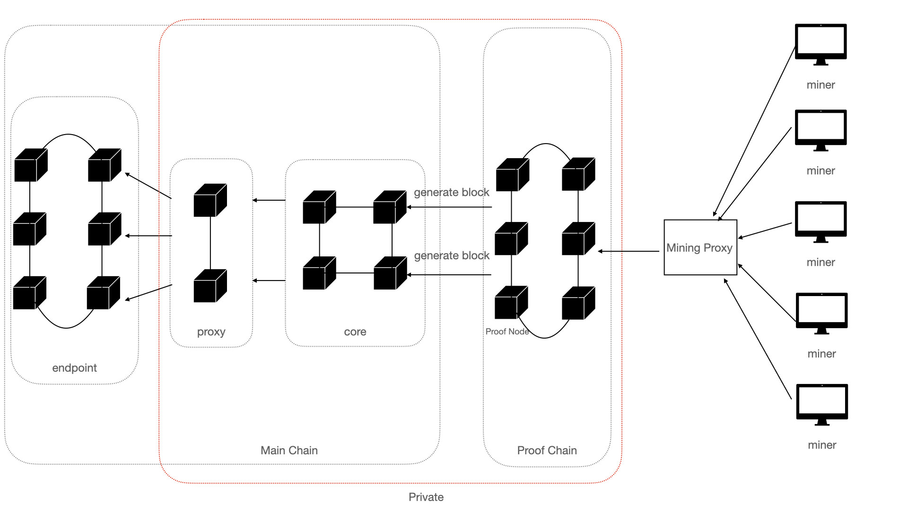
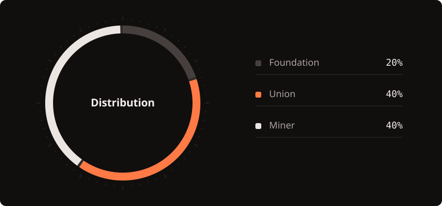
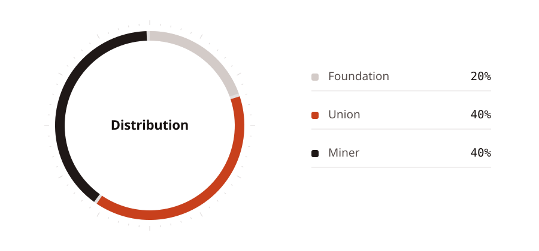

XPHERE v2.0
Paul Kim
Last Updated: July 7, 2026
ABSTRACT
Traditional blockchain networks have faced challenges in overcoming the blockchain trilemma of scalability, security, and decentralization. To address this, we have designed a Dual-Chain Architecture consisting of the Main Chain and the Proof Chain.
The Main Chain delivers scalability and efficient transaction processing through an optimized PBFT consensus, while the Proof Chain ensures security and decentralized trust with a robust PoW mechanism. By dividing roles between the two chains, the architecture achieves a balance of trust and efficiency.
This innovative design supports diverse applications such as finance, logistics, and digital asset management, aiming to expand the potential of decentralized networks and drive the next generation of blockchain innovation.
Table of Contents
- Introduction
- Technical Specifications
- Dual-chain Architecture
- Consensus
- Economic Model of the Coin
- Ethereum Compatibility in XPHERE
- Roadmap
- Conclusion
1INTRODUCTION
The blockchain space has experienced rapid innovation, yet many networks face challenges in balancing accessibility, stability, and user adoption. XPHERE 1.0 was introduced as a unique blockchain platform with its own smart contract structure, distinct from the commonly used EVM (Ethereum Virtual Machine) ecosystem. While this proprietary approach offered certain technical advantages, it also introduced significant limitations.
Key Limitations of XPHERE 1.0:
- Limited Accessibility:
- The proprietary smart contract structure made it difficult for existing EVM developers and users to adopt the platform, hindering ecosystem growth.
- Transaction Drop Issues:
- Users often experienced dropped transactions, leading to frustration and reduced reliability for decentralized applications.
- Inconsistent Block Generation:
- Irregular block times created uncertainty for users and developers, impacting both usability and security.
These limitations not only restricted the growth of XPHERE's ecosystem but also posed potential risks to its long-term adoption and scalability.
To address these challenges and unlock the full potential of the network, we developed XPHERE v2.0, an upgraded blockchain platform designed to enhance accessibility, reliability, and scalability. By learning from the shortcomings of XPHERE v1.0, XPHERE v2.0 introduces a robust architecture that integrates dual-chain technology and significantly improves the user experience.
XPHERE v2.0 is built with the following key objectives:
- Seamless integration with EVM-compatible tools and ecosystems, opening the network to a wider range of developers and users.
- Improved transaction reliability to eliminate dropped transactions and enhance overall network trust.
- Consistent block generation for predictable performance and better support for decentralized applications.
XPHERE v2.0 represents a significant step forward, addressing the foundational challenges of its predecessor while paving the way for a more accessible and reliable blockchain ecosystem.
2TECHNICAL SPECIFICATIONS
i. Network Architecture
XPHERE's dual-chain architecture consists of the Main Chain and the Proof Chain. The Main Chain handles transaction processing and block finalization, while the Proof Chain focuses on validator selection and cryptographic proof generation.
ii. Node Requirements
The figures below are the protocol-level baseline for participating in Main Chain consensus. They describe the class of machine the protocol was designed around — they are not a provisioning specification:
- CPU: 16 CPUs
- RAM: 32 GB
- Storage: 500 GB+ SSD
- Network: High-speed internet connection with at least 100 Mbps bandwidth
Storage is a moving requirement: block data alone already exceeds 300 GB, so operators should provision headroom beyond the current chain size rather than the baseline. Before provisioning any node, see System Requirements and Validator Node for the current operating requirements, which reflect chain growth and are authoritative for operators.
iii. Transaction Throughput
XPHERE's architecture is designed to handle a high volume of transactions, with the Main Chain capable of processing up to 4,000 transactions per second (TPS).
3DUAL-CHAIN ARCHITECTURE
i. Main Chain: Optimized PBFT Consensus
The Main Chain in XPHERE's dual-chain architecture adopts an optimized version of the Practical Byzantine Fault Tolerance (PBFT) consensus mechanism. This design resolves critical challenges in scalability and communication overhead that traditional PBFT systems face, while maintaining robust security and decentralization.
Limitations of Traditional PBFT
PBFT is widely recognized for its fault tolerance and high security. However, as the number of participating nodes increases, its communication overhead grows exponentially. The consensus process requires multiple stages, including:
- Request: A client submits a transaction to the network.
- Pre-Prepare: The primary node broadcasts the transaction request to all other nodes.
- Prepare: Nodes verify the request and exchange their prepared status.
- Commit: Nodes exchange commit messages to finalize consensus.
- Reply: A consensus decision is sent back to the client.
In each stage, all nodes communicate with one another, resulting in excessive network traffic and resource consumption. This limitation has traditionally been mitigated by restricting the number of nodes participating in the consensus process, which risks reducing decentralization.
XPHERE’s Solution: Council and Committee
To address these challenges, XPHERE employs an optimized PBFT mechanism by introducing a Council and a Committee structure. This approach significantly reduces communication overhead while retaining the benefits of PBFT.
- Council Formation:
- The Council is a governing body comprising selected nodes in the network.
- Members are chosen based on predefined criteria to ensure decentralization and fairness.
- Council membership is drawn from the Union — the network's staked validator group described in Union Staking and Reward Mechanism — so the Council and Committee described here are formed from Union validator nodes.
- Dynamic Committee Selection:
- For each consensus round, a subset of Council members, the Committee, is randomly selected.
- The Committee handles the exchange of consensus messages, reducing the need for communication among all nodes.
- Efficient Consensus Communication:
- By confining message exchanges to the Committee, the communication load is drastically reduced.
- Even as the number of total nodes grows, the communication complexity remains constant or minimally affected.
Consensus Process in XPHERE's Main Chain
The modified PBFT consensus mechanism in XPHERE operates as follows:
- A client submits a transaction to the network.
- The Council receives the transaction and selects a Committee for the current round.
- The Committee exchanges and verifies consensus messages (e.g., Pre-Prepare, Prepare, Commit).
- Once consensus is reached, the Committee broadcasts the finalized decision to the network.
- The network responds to the client with the consensus result.
This streamlined process ensures efficient communication and predictable performance, even as the network scales.
Key Advantages
- Improved Scalability: By limiting consensus communication to the Committee, the network avoids the exponential growth in overhead seen in traditional PBFT systems.
- Enhanced Security: Randomized Committee selection adds unpredictability, reducing risks from targeted attacks.
- Decentralization Maintained: While the Committee conducts consensus, the Council ensures broad representation and fairness.
Comparison: Traditional PBFT vs. XPHERE PBFT
| Feature | Traditional PBFT | XPHERE PBFT |
|---|---|---|
| Communication Overhead | Exponential (O(n²)) | Limited to Committee (O(k²)) |
| Scalability | Poor as network size grows | Scalable with Council-Committee model |
| Decentralization | Reduced due to node limits | Retained with Council representation |
| Security | Strong but resource-intensive | Strong with randomized Committee |
Conclusion
By integrating the Council and Committee structure, XPHERE’s Main Chain optimizes PBFT to meet the demands of modern blockchain ecosystems. This innovative approach not only ensures high performance and security but also lays the foundation for a scalable and decentralized future.
ii. Proof Chain: PoW-Based Validation Layer
The Proof Chain in XPHERE's dual-chain architecture serves as a dedicated validation layer, designed to select validators and perform cryptographic proof computations. Its Proof-of-Work (PoW) operations are powered by xpHash, a purpose-built algorithm that succeeds the network's original PoW at a deterministic activation height (see xpHash: The Proof Chain’s Native Proof-of-Work Algorithm). Built upon well-established cryptographic primitives, xpHash ensures robust security and integrity within the network. Notably, transaction processing does not occur within the Proof Chain, as its sole purpose is to establish trust and validate validators efficiently.
Role of the Proof Chain
The Proof Chain's primary functions are:
- Validator Selection:
- The Proof Chain is responsible for determining which nodes are eligible to participate as validators within the network.
- This process is secured through cryptographic proof generated by PoW operations.
- Proof Generation:
- Using the xpHash algorithm, nodes solve complex computational puzzles to produce proofs.
- The produced proof is a verifiable output that establishes the validator’s eligibility.
- Supporting Security:
- The computational difficulty of PoW ensures that the network remains resistant to tampering and Sybil attacks.
- This layer acts as a foundation of trust for the network’s operation.
Proof Chain Consensus Process
- Nodes compete to solve a PoW puzzle using the xpHash algorithm.
- The first node to generate a valid proof submits it to the network for verification.
- The proof is used to select the next validator(s) for the network.
- Once validators are selected, their role is passed to the Main Chain for transaction processing and block finalization.
Key Characteristics of the Proof Chain
- Dedicated Validation Layer:
- The Proof Chain does not handle transaction processing, ensuring its focus remains solely on validation and proof generation.
- Enhanced Security:
- By using xpHash and PoW, the Proof Chain provides robust protection against attacks, including Sybil attacks and tampering.
- Scalability through Specialization:
- Offloading the validation process to the Proof Chain allows the Main Chain to focus on transaction processing, improving overall network efficiency.
- Trust Foundation for the Main Chain:
- Validators selected through the Proof Chain provide a trusted basis for the Main Chain’s operations.
Advantages of the Proof Chain
| Feature | Benefit |
|---|---|
| Secure Validator Selection | Ensures only eligible nodes participate in consensus. |
| xpHash PoW Integration | Offers high security and verifiable proof generation. |
| Specialized Function | Avoids processing transactions, keeping the validation process lean. |
| Scalable Architecture | Allows the Main Chain to operate efficiently without validation overhead. |
xpHash: The Proof Chain’s Native Proof-of-Work Algorithm
The Proof Chain employs xpHash, a Proof-of-Work algorithm designed specifically for the operational characteristics of the XPHERE network. Rather than relying solely on a general-purpose hash function, xpHash is purpose-built to align with the Proof Chain’s role as a dedicated validator-selection and proof-generation layer within XPHERE’s dual-chain architecture.
Design Objectives
xpHash is governed by four design objectives that reflect XPHERE’s long-term direction:
- Network Stability:
- xpHash is calibrated against the Proof Chain’s block production cadence and validator selection model.
- This alignment yields more predictable block intervals and a more stable progression of the Proof Chain over time.
- Mining Environment Optimization:
- The algorithm is shaped around the operational realities of miners and pools that support the XPHERE network.
- The result is a healthier, more sustainable, and more participation-friendly mining environment for ecosystem participants.
- Headroom for Hardware and Ecosystem Expansion:
- As the XPHERE ecosystem evolves to encompass new hardware profiles, new categories of participants, and new application domains, the Proof Chain must scale alongside that growth.
- xpHash provides the algorithmic headroom required to absorb such expansion without disruptive future migrations.
- Foundation for a Long-Term Proof-of-Work Strategy:
- xpHash is positioned not as an isolated change but as the basis of XPHERE’s multi-year Proof-of-Work roadmap.
- It enables coherent iteration and refinement of the Proof Chain within a single, unified algorithmic framework.
Cryptographic Foundation
xpHash composes multiple well-established cryptographic primitives into a verifiable Proof-of-Work construction. The specific internal composition is treated as part of XPHERE's protocol surface and is not detailed in this document. As a production-grade PoW algorithm, xpHash provides the following essential cryptographic properties:
- Collision Resistance: It is computationally infeasible to find two different inputs that produce the same output.
- Pre-image Resistance: It is virtually impossible to derive the original input from the output.
- Efficient Verification: Once a proof is generated, it can be quickly and easily verified by all nodes.
- Difficulty Adjustment: By requiring proofs to meet specific criteria, the network can dynamically adjust computational difficulty to control the time taken to find a valid proof.
Together with the design objectives above, these properties give xpHash the security guarantees expected of a production PoW algorithm, while the XPHERE-specific design allows the Proof Chain to behave predictably under the network's actual operational conditions.
Activation Parameters
xpHash is activated on the Proof Chain at deterministic block heights, providing a clean and verifiable upgrade boundary:
| Network | Activation Block | Configuration Parameter |
|---|---|---|
| Testnet | 327,400 | XPHASH_FORK_BLOCK = 327400 |
| Mainnet | 1,740,000 | XPHASH_FORK_BLOCK = 1740000 |
Blocks below the activation height are validated under the prior rule set, while blocks at and above the activation height are produced and validated under xpHash. This height-based activation preserves the complete history of the chain and defines a deterministic boundary for the algorithmic upgrade.
Conclusion
The Proof Chain is an integral part of XPHERE’s dual-chain architecture, providing a secure and efficient mechanism for validator selection through Proof-of-Work. With xpHash as its native proof algorithm, the Proof Chain operates on a foundation designed specifically for the XPHERE ecosystem — reinforcing network stability, optimizing the mining environment, and establishing a coherent basis for the network’s long-term Proof-of-Work direction.
iii. Interaction Between Main Chain and Proof Chain

The Main Chain and Proof Chain in XPHERE's dual-chain architecture operate in a tightly integrated manner, ensuring seamless communication and functionality. The two chains work collaboratively through algorithmic computations and RPC (Remote Procedure Call) communication to maintain a synchronized network state and facilitate validator selection.
Key Collaboration Mechanisms
- Status Synchronization via RPC Communication:
- The Proof Chain and Main Chain regularly exchange data through efficient RPC communication protocols.
- This process ensures that the current state of both chains remains synchronized, enabling real-time updates on validator statuses and system metrics.
- Validator Selection Coordination:
- The Proof Chain performs intensive xpHash PoW computations to generate proofs and determine eligible validators.
- These selected validators are then communicated to the Main Chain, which assigns them roles in block validation and consensus processes.
- The collaborative approach ensures fairness and reliability in validator selection, strengthening network security and decentralization.
- Algorithmic Data Exchange:
- Computation results, such as PoW proofs and validator scores, are dynamically shared between the chains.
- This exchange allows the Main Chain to make informed decisions about block production and consensus finalization.
Interaction Flow
- Proof Generation on the Proof Chain:
- Nodes compete to solve PoW challenges, and the Proof Chain generates cryptographic proofs.
- Validator Status Update via RPC:
- The Proof Chain shares validated proof data with the Main Chain.
- The Main Chain updates its validator registry based on the received data.
- Consensus Execution on the Main Chain:
- Validators selected by the Proof Chain participate in the Main Chain's consensus mechanism.
- This ensures a continuous and transparent validator rotation.
- State Feedback to the Proof Chain:
- The Main Chain provides feedback to the Proof Chain, including validator performance and system status, enabling adjustments in future validator selection processes.
Advantages of This Integration
| Feature | Benefit |
|---|---|
| Real-Time Synchronization | Maintains a consistent network state across both chains. |
| Secure Validator Selection | Ensures fairness and reliability through collaborative data exchange. |
| Efficient Resource Allocation | Offloads computation-heavy tasks to the Proof Chain, optimizing network performance. |
| Enhanced Scalability | Modular interaction between chains allows the network to scale seamlessly. |
Conclusion
The integration of the Main Chain and Proof Chain through algorithmic computations and RPC communication is a cornerstone of XPHERE's dual-chain architecture. This collaboration enables secure, reliable validator selection and efficient state synchronization, ensuring the network operates cohesively and scales effectively to meet the demands of decentralized applications.
4CONSENSUS
XPHERE does not rely on a single consensus mechanism. Consensus is divided across the two chains of the dual-chain architecture described in Sections 2 and 3:
- Proof Chain — Proof of Work. Miners compete on the xpHash Proof-of-Work algorithm. This work secures the network and drives validator selection; the Proof Chain does not process transactions.
- Main Chain — Optimized PBFT. The Union performs the optimized PBFT process described in Main Chain: Optimized PBFT Consensus, producing block consensus and finality.
Two terms are used throughout this document and should not be confused. The Union is the group: the set of staked members that participates in Main Chain consensus, governance, and reward distribution. Validator is the technical role: every Union member operates a validator node, so a Union member is a validator, and the Council and Committee of Section 3 are formed from Union validators. Miner refers to a separate role — a participant contributing xpHash hash power to the Proof Chain, which requires no Union membership.
i. Consensus Mechanism: Trust and Security with Proof of Work (PoW)
On the Proof Chain, trust and security are established through Proof of Work (PoW), a time-tested method that reinforces the network's integrity. PoW leverages the computational power of participants to protect the chain from malicious activities while ensuring data integrity. In XPHERE, PoW is scoped to validator selection and proof generation rather than to transaction ordering, which the Main Chain handles through PBFT.
Core Principles of PoW
- Computational Effort:
- Miners compete to solve complex mathematical puzzles, a process requiring significant computational resources.
- The first miner to produce a valid proof gains the right to add a new block to the Proof Chain, and that proof feeds the network's validator selection process.
- Verification of Work:
- The result of the computation (proof) can be easily verified by other nodes in the network, ensuring fairness and validity in the consensus process.
- Economic Incentives:
- Miners are rewarded for their computational efforts, creating a strong incentive for honest participation. The miner share of each block reward is set out in Distribution Model.
- The high cost of computation acts as a deterrent against malicious actions, as any attempt to manipulate the network would require disproportionate resources.
PoW and Network Security
- Resistance to Attacks:
- Sybil Attack Prevention: PoW requires computational resources that make it economically impractical for attackers to generate fake nodes at scale.
- 51% Attack Defense: The cost of acquiring a majority of the network's computational power rises as the network grows, and — as described in 51% Attack Mitigation in XPHERE — hash power alone does not confer control over Main Chain consensus.
- Immutable Ledger:
- Altering the blockchain would require re-computing the PoW for all subsequent blocks, which becomes exponentially harder over time.
- Decentralized Trust:
- Trust is distributed across the network, removing the need for a centralized authority.
- The consensus process is designed so that no single participant can unilaterally manipulate the system.
Optimized PoW in XPHERE
XPHERE’s implementation of PoW is tailored to its dual-chain architecture, with enhancements to improve efficiency and scalability:
- Specialized Role in the Proof Chain:
- PoW is exclusively used in the Proof Chain for validator selection, allowing the network to offload computationally heavy tasks from the Main Chain.
- This separation ensures that the Main Chain remains optimized for transaction processing and block finalization.
- Efficient Computation Design:
- XPHERE integrates xpHash, a Proof-of-Work algorithm composed of well-established cryptographic primitives, as the backbone of its PoW mechanism. This provides robust security through collision resistance and pre-image resistance while ensuring efficient validation of computational proofs.
- Energy Optimization:
- While maintaining PoW’s inherent security benefits, XPHERE incorporates mechanisms to minimize computational waste, addressing common energy concerns associated with traditional PoW networks.
Benefits of PoW in XPHERE
- Proven Security: PoW provides a secure and resilient consensus method, as demonstrated by leading blockchain networks like Bitcoin.
- Reliable Validation: Miners must perform verifiable computational work, and the resulting proofs can be independently checked by any node, minimizing fraudulent activities and maintaining the blockchain's integrity.
- Decentralization: PoW ensures the distribution of power across the network, reducing risks of centralization and enhancing trust among participants.
The Role of PoW in XPHERE
In XPHERE, PoW is a cornerstone of its validator selection process. The use of xpHash for computational tasks ensures a secure, fair, and transparent mechanism. By isolating validation tasks to the Proof Chain, XPHERE enhances the Main Chain's efficiency, enabling the network to achieve high performance without compromising security or scalability.
ii. 51% Attack Mitigation in XPHERE
XPHERE's consensus design is intended to make 51% attacks — a prevalent concern in PoW-based systems — economically impractical. Mining itself is permissionless: any participant running supported xpHash mining hardware may contribute hash power to the Proof Chain, and no approval is required to mine. What the design constrains is the path from hash power to block acceptance, because Proof Chain work alone does not finalize blocks — PBFT consensus among Union validators on the Main Chain does.
Mechanisms That Raise the Cost of a 51% Attack
- Separation of Mining from Finality:
- Miners produce proofs on the Proof Chain; blocks are agreed and finalized by the Union through PBFT consensus on the Main Chain.
- Accumulating hash power therefore does not, on its own, give an actor the ability to rewrite Main Chain history.
- Randomized Miner-to-Validator Assignment:
- Miners cannot choose which Union node their work is submitted to.
- The network assigns miners to Union nodes in a randomized manner, which is designed to prevent an attacker from concentrating work on a chosen validator and to make collusion between a miner and a specific validator substantially harder.
- Separation of Miners and the Union:
- Miners operate independently and have no influence over which Union node validates their work.
- The two roles are economically and operationally distinct: mining requires hash power, while Union membership requires a stake of 35 million XP per member (see Union Staking and Reward Mechanism).
Why This Design Matters
- Higher Cost of Coordinated Attacks:
Controlling block production would require both a majority of Proof Chain hash power and control of the Union validator set that performs Main Chain consensus. Requiring both a hardware position and a large staked position makes such an attack substantially more expensive than acquiring hash power alone. - Fair and Decentralized Validation:
Randomized miner-to-validator assignment is designed to prevent any single entity from monopolizing validation, reinforcing the network's decentralized nature. - Verifiable Participation:
Union membership, per-member stake, and proposed-block counts are published on the network explorers, so the distribution of consensus power can be independently checked at xpscan.io/unions or xp.tamsa.io/main/unions.
No consensus system can offer an absolute guarantee against attack. The objective of this design is narrower and testable: to make a 51% attack economically irrational and publicly observable, while preserving open participation in mining and decentralized validation.
5ECONOMIC MODEL OF THE COIN
As XPHERE operates on its own mainnet, the native asset is classified as a coin rather than a token. The coin’s distribution, emission mechanism, and utility are carefully designed to ensure a sustainable and balanced ecosystem for the network's growth.
A. Coin Utility and Role in the Network
XPHERE’s coin serves as the foundation of the ecosystem, enabling key functionalities such as:
- Transaction Fees:
- Used for processing and validating transactions on the Main Chain.
- Staking:
- Validators are required to stake coins to participate in consensus, ensuring alignment with the network’s security and integrity.
- Incentives for Miners and the Union:
- Coins are rewarded to Proof Chain miners and to Union validator nodes, driving active network participation. See Distribution Model for the exact split.
- Governance:
- Coin holders may participate in future governance mechanisms, influencing decisions related to network upgrades and policies.
B. Union Staking and Reward Mechanism
XPHERE introduces a Union staking system that allows network participants to contribute to network security and governance while earning rewards through block validation activities.
Union Participation Requirements
- Staking Threshold:
- To participate as a Union member, participants must stake exactly 35 million XP coins.
- This substantial staking requirement ensures that only committed participants with significant network investment can join the Union.
- Node Address Registration:
- During the staking process, participants must provide a valid node address that will be associated with their Union membership.
- This node address serves as the identifier for reward distribution and network participation tracking.
Union Reward Distribution
- Block Proposer Selection and Rewards:
- When a Union member's node address serves as the block proposer in the Union rotation, that specific Union member receives 40% of the block reward for the proposed block.
- Reward Distribution Logic:
- Union block-proposer turns follow a round-robin rotation: eligible Union members are cycled sequentially in a predetermined order.
- This rotation is distinct from Proof Chain mining — miners compete through xpHash Proof-of-Work to seal Proof Chain blocks, while Union proposer turns advance deterministically through the rotation.
- Once a block is successfully validated, the Union member who serves as the proposer at the reward distribution moment on the Main Chain receives 40% of that block's reward automatically distributed to their registered node address.
- Round-Robin Proposer Rotation:
- The network maintains a sequential order of all eligible Union validators in the round-robin cycle.
- Each Union member gets their turn to serve as block proposer based on this predetermined rotation.
- This systematic approach distributes proposer opportunities evenly among all participating Union members.
- Because the rotation is deterministic, each member's position in the cycle — and therefore when its proposer turn comes around — is predictable. The rotation determines turn order only; the value of the rewards attached to a turn depends on the emission schedule and on network activity, both of which change over time.
Benefits of Union Participation
- Predictable Proposer Turns: The deterministic rotation distributes block-proposal opportunities evenly across members, so participation is not dependent on competing for a turn.
- Network Governance: Union members gain enhanced governance rights within the XPHERE ecosystem.
- Long-term Alignment: The substantial staking requirement aligns Union members' interests with the network's long-term success.
- Security Contribution: Union staking enhances overall network security through increased stake-based participation.
C. Emission Mechanism
- Total Supply:
- The total coin supply is capped at 5.5 billion coins, combining the legacy token distribution with a long-term emission schedule.
- 1.5 billion coins were pre-distributed based on the total supply of XPHERE 1.0, ensuring continuity for existing holders.
- The remaining 4 billion coins will be distributed over 100 years as mining and validation rewards.
- This structure ensures both scarcity and long-term value preservation.
- Deflationary Model:
- The emission follows a 26.28% annual reduction model, gradually decreasing the reward for miners and validators each year.
- This deflationary mechanism promotes scarcity, incentivizing early participation while maintaining economic stability over time.
- Block Reward System:
- Reward Adjustment Cycle: Block rewards are adjusted every 31,536,000 blocks, creating predictable emission cycles.
- Reward Distribution Frequency: Rewards are distributed every 60 blocks, ensuring regular and consistent compensation for network participants.
- Transaction-Based Rewards: Each block provides transaction-based rewards, creating direct incentives for transaction processing and network activity.
Emission Schedule Over 100 Years
The following table demonstrates the systematic reduction of mining rewards over a 100-year period. Emission is minted once per 60-block cycle — approximately once per minute — so the middle column states the amount minted per cycle, not per individual block:
| Year | Annual Mining Reward | Reward per 60-Block Cycle | Cumulative Supply |
|---|---|---|---|
| 0 | 0 | 0 | 1,500,000,000 |
| 1 | 1,051,200,000 | 2,000 | 2,551,200,000 |
| 2 | 774,944,640 | 1,474.4 | 3,326,144,640 |
| 3 | 571,289,188.608 | 1,086.92768 | 3,897,433,828 |
| ... | ... | ... | ... |
| 98 | 0.00015047 | 0.00000029 | 5,500,000,000 |
| 99 | 0.00011093 | 0.00000021 | 5,500,000,000 |
| 100 | 0.00008178 | 0.00000016 | 5,500,000,000 |
At a one-second block time, a 60-block cycle occurs 525,600 times per year, so the Year 1 figure of 2,000 XP per cycle corresponds to the 1,051,200,000 XP annual emission shown in the table.
Total Emission Over 100 Years: 4,000,000,000 XP. The 5,500,000,000 XP figure in the Cumulative Supply column is the total supply, which comprises this 100-year emission plus the 1,500,000,000 XP pre-distribution.
The first reduction cycle has already completed. The network is currently minting 1,474.4 XP per 60-block cycle, corresponding to the Year 2 row above.
Key Characteristics of the Emission Schedule:
- Predictable Decline: The 26.28% annual reduction creates a predictable and transparent emission curve
- Long-term Sustainability: The model ensures network incentives remain viable for decades while maintaining scarcity
- Early Adopter Advantage: Higher initial rewards incentivize early network participation and security
- Mathematical Precision: The emission schedule is algorithmically determined, ensuring fairness and transparency
D. Transaction Fee Burn Mechanism
XPHERE implements a 50% transaction fee burn mechanism as a cornerstone of its sustainable economic model, designed to create long-term value preservation and network stability. The remaining half of every fee is not retained by a single party — it is distributed to the participants that operate the network.
Transaction Fee Distribution
Every transaction fee collected on the network is split four ways:
| Recipient | Share |
|---|---|
| Burn | 50% |
| Union | 20% |
| Miner | 20% |
| Foundation | 10% |
- Burn (50%) is permanently removed from circulation.
- Union (20%) compensates Union validators for Main Chain consensus and block finalization.
- Miner (20%) compensates Proof Chain miners for xpHash Proof-of-Work.
- Foundation (10%) funds network operations and ecosystem development.
This split applies to transaction fees only. It is separate from the minted block reward, which is divided 40% Union / 40% Miner / 20% Foundation as set out in Distribution Model.
Balanced Deflation
- Controlled Network Activity Mitigation:
- The burn mechanism provides balanced deflationary pressure to prevent excessive network activity from causing inflationary effects.
- By permanently removing 50% of transaction fees from circulation, the system maintains economic equilibrium even during high-usage periods.
- Value Stability Through Appropriate Inflation Pressure Management:
- The burn mechanism works synergistically with the 26.28% annual emission reduction to ensure optimal inflation control.
- This dual-deflationary approach creates a stable foundation for long-term value preservation.
Participant Incentive Preservation
- Sufficient Reward Maintenance:
- While 50% of fees are burned, the remaining 50% is routed to the participants that secure the network — 20% to the Union, 20% to miners, and 10% to the Foundation.
- This balance maintains both validator and miner participation, each of which is essential to a different half of the dual-chain consensus.
- Decentralized Consensus Mechanism Sustainability:
- The distributed portion of transaction fees supports the long-term viability of the consensus mechanism as block emission declines.
- Union validators and miners remain economically incentivized to maintain network security and performance.
Transparency and Predictability
- Clear and Reliable Burn Policy for Market Confidence:
- The fixed 50% burn rate provides market participants with transparent and predictable tokenomics.
- This clarity enhances investor confidence and supports informed decision-making within the ecosystem.
- Democratic Policy Decision Process Through Governance:
- Future adjustments to the burn mechanism can be implemented through community governance.
- This democratic approach ensures that policy changes reflect the collective interests of network participants.
Economic Impact and Benefits
The 50% burn mechanism creates several key advantages for the XPHERE ecosystem:
- Usage-Based Scarcity: Higher network activity directly correlates with increased coin burns, creating a positive feedback loop between adoption and value preservation.
- Long-term Sustainability: The mechanism ensures that network growth contributes to coin scarcity rather than dilution, supporting sustainable economic growth.
- Market Stability: By providing predictable deflationary pressure, the burn mechanism helps stabilize coin value against market volatility.
E. Distribution Model
Each minted block reward is distributed across three recipients, balancing network operation, mining participation, and Union-based validation:
| Recipient | Share |
|---|---|
| Foundation | 20% |
| Miner | 40% |
| Union | 40% |
- Miner (40%) rewards Proof-of-Work participants securing the Proof Chain.
- Union (40%) is distributed to Union members through the block-proposer rotation described in Union Staking and Reward Mechanism.
- Foundation (20%) funds ongoing network operations and ecosystem development.
This table covers minted block rewards. Transaction fees follow a different split — 50% burned, 20% Union, 20% Miner, 10% Foundation — described in Transaction Fee Burn Mechanism.


6ETHEREUM COMPATIBILITY IN XPHERE
XPHERE is designed to ensure seamless compatibility with Ethereum, leveraging its established ecosystem while providing the scalability and flexibility of a next-generation blockchain. By supporting Ethereum's widely adopted EVM (Ethereum Virtual Machine) standard, XPHERE opens its network to developers, tools, and decentralized applications (dApps) that already operate within the Ethereum ecosystem.
i. Key Aspects of Ethereum Compatibility
- EVM Compatibility:
- XPHERE supports the execution of smart contracts written in Solidity, the primary programming language used on Ethereum.
- Developers can deploy existing Ethereum-based dApps directly on XPHERE with minimal changes, reducing migration costs and time.
- Cross-Chain Interoperability:
- XPHERE's architecture allows seamless interaction with Ethereum, enabling assets and data to move between the two networks.
- This interoperability creates a bridge for users and developers to leverage the strengths of both ecosystems.
- Tool Integration:
- Popular Ethereum tools such as MetaMask, Truffle, and Hardhat are fully compatible with XPHERE, ensuring developers can use familiar workflows.
- This lowers the barrier to entry for developers transitioning to XPHERE while maintaining a consistent user experience.
- Scalable Infrastructure:
- While maintaining compatibility with Ethereum, XPHERE addresses Ethereum's scalability challenges by leveraging its dual-chain architecture.
- XPHERE offers higher transaction throughput and lower fees, making it a viable alternative for dApps facing performance bottlenecks on Ethereum.
ii. Benefits of Ethereum Compatibility
- Access to a Large Ecosystem:
- By aligning with Ethereum standards, XPHERE taps into the vast Ethereum developer community and its existing dApps, fostering rapid adoption.
- User and Developer Familiarity:
- Developers familiar with Ethereum can easily transition to XPHERE without needing to learn a new language or framework.
- End-users benefit from a familiar wallet and dApp experience, ensuring a smooth onboarding process.
- Enhanced Performance for dApps:
- dApps running on XPHERE enjoy faster transaction speeds and lower costs, addressing Ethereum's congestion and high gas fee issues.
iii. Building a Bridge Between Ecosystems
XPHERE’s Ethereum compatibility ensures that it acts as a complementary network rather than a competing platform. By creating a bridge between the two ecosystems, XPHERE enables developers and users to leverage Ethereum’s mature ecosystem alongside XPHERE’s scalable and efficient infrastructure.
This strategic interoperability not only accelerates adoption but also positions XPHERE as a critical player in the evolution of blockchain ecosystems, supporting both innovation and integration across networks.
7ROADMAP
XPHERE's development proceeds in three phases: commercializing the upgraded mainnet, expanding an open ecosystem on top of stable protocol infrastructure, and scaling real-usage applications. Items are marked Delivered where they are already live on the network; all other items are forward-looking plans and are subject to change based on network conditions, ecosystem readiness, and Foundation decisions.
i. 2025 — Network Commercialization and Global Ecosystem Foundation
2025 established the commercial foundation of XPHERE on the upgraded mainnet — validator participation, liquidity access, global infrastructure partnerships, and the groundwork for the dApp ecosystem.
1Q–2Q: XPHERE 2.0 Launch and Liquidity
- XPHERE 2.0 Mainnet Launch (Delivered) — The upgraded mainnet launched with full EVM compatibility and enhanced network performance, enabling developers to deploy Solidity-based applications with existing EVM tooling.
- Union Validator Onboarding (Delivered) — Onboarding of Union Validators began, building the foundation for decentralization, governance participation, and a long-term validator ecosystem.
- CEX Listing (Delivered) — XP was listed on centralized exchanges to broaden global liquidity access and ecosystem participation.
- Ultra-Low Gas Fee Optimization (Delivered) — Transaction fees were optimized for high-frequency, micro-payment, and real-usage applications.
3Q–4Q: Infrastructure Expansion and dApp Ecosystem Preparation
- Network Infrastructure Expansion (Delivered) — Network capacity was expanded to reliably support large-scale traffic, enterprise-grade use cases, and future dApp deployment.
- Global Union Partner Onboarding (Delivered) — Global blockchain data, infrastructure, and ecosystem partners began onboarding into the Union Validator network, strengthening technical and ecosystem credibility.
- Protocol Upgrades and Network Stability — Staged review of the protocol upgrades and hard forks required to improve security, operational stability, and validator/node participation.
- Ecosystem Expansion Preparation — Preparation of the dApp expansion strategy, developer support programs, early ecosystem programs, and infrastructure partnerships for DeFi, RWA, utility, and enterprise applications.
ii. 2026 — Open Ecosystem Expansion and Public Infrastructure Growth
In 2026, XPHERE moves beyond core infrastructure to focus on open ecosystem expansion as an independent public Layer 1 — expanding Union Validators, hardening the protocol, supporting dApp builders, growing liquidity, and laying the groundwork for stablecoin, payment, tokenization, and B2B/B2G-compatible applications.
1Q: Ecosystem Fund and Union Expansion
- XPHERE Ecosystem Fund — Launch of a fund supporting promising projects on the mainnet, focused on DeFi, RWA, wallets, developer tools, bridges, oracles, DID, payments, stablecoins, and utility applications.
- Milestone-Based Ecosystem Support — A planned approach in which support would be tied to concrete development, deployment, user-growth, liquidity, and integration progress rather than disbursed as simple grants. No milestone structure has been published; see Grant Program for what the Foundation has actually published.
- Union Validator Expansion — Continued expansion of the Union Validator network toward a target of 31 validators across global infrastructure firms, ecosystem partners, and strategic institutions.
2Q: Protocol Stability and dApp Onboarding
- Protocol Upgrade and Hard Fork (Delivered) — The staged protocol upgrade was executed as the xpHash hard fork, now active on both networks (testnet block
327,400, mainnet block1,740,000). - PoW Security Layer Strengthening (Delivered) — The Proof Chain transitioned to the xpHash algorithm with ASIC-based mining, while the PBFT-based Main Chain continues to provide fast finality and stable execution.
- Ecosystem Fund — First Cohort — First supported projects across DeFi protocols, DEX infrastructure, RWA applications, payment tools, wallet integrations, analytics, and developer infrastructure.
- Oracle Infrastructure Expansion — Expansion of oracle infrastructure so dApps can reliably consume external data for DeFi, RWA, pricing, identity, payments, and enterprise use cases.
- Network Operations Improvements — Sustainable mainnet operations through stable validator operations, improved node participation, and stronger network monitoring.
3Q: DeFi, Liquidity, and Payment Infrastructure
- Native DeFi and Liquidity Infrastructure — Preparation of core on-chain financial primitives: DEX, lending, staking, liquidity management, and related components.
- CEX and DEX Expansion — Additional centralized and decentralized liquidity channels to strengthen market access and user onboarding.
- Stablecoin and Payment-Asset Infrastructure — Infrastructure enabling third-party issuers and dApps to use stable settlement assets on XPHERE for DeFi, payments, RWA, and cross-border settlement. XPHERE does not issue a stablecoin itself.
- Tokenization and RWA Infrastructure Research — Support for projects exploring real-world assets, digital vouchers, points, payment credits, membership rights, and other asset- or utility-based on-chain models.
- dApp Support Framework — A clear support framework covering technical documentation, integration support, ecosystem marketing, grant or investment review, and go-to-market support.
4Q: Union Network Growth and Institution-Compatible Applications
- 31 Union Validator Target — Completing the expansion of the Union Validator network to 31 validators.
- Cross-Chain Bridge Enhancement — Enhanced cross-chain bridge infrastructure for asset movement with Ethereum, BNB Chain, and major EVM-compatible ecosystems.
- DID and Credential Applications — Support for DID, Verifiable Credential, and identity-related applications as one pillar of the broader dApp ecosystem — one of several supported use cases rather than a single core business.
- B2B and B2G-Compatible Application Framework — A framework for enterprise, institutional, and public-sector applications, leveraging low fees, fast finality, transparent data verification, EVM compatibility, and stable network operations.
- Native Staking Solution — Introduction or expansion of staking-related infrastructure for XP holders, validators, and ecosystem participants to strengthen long-term participation and stability.
iii. 2027 — Application Layer Expansion and Real-Usage Ecosystem
Building on the infrastructure established in 2026, 2027 focuses on scaling real applications, liquidity, and user activity — evolving XPHERE from technical infrastructure into a real-usage public Layer 1 where DeFi, RWA, stablecoins, payments, DID, and B2B/B2G-compatible services interconnect.
1Q: Application Layer Activation
- Core dApp Ecosystem Expansion — Launch and growth support for core dApps across DeFi, RWA, DID, payments, wallet infrastructure, tokenization, and utility services.
- Stablecoin-Based Payment and Settlement Use Cases — Support for dApps using stablecoins and payment assets for on-chain payment, settlement, liquidity provision, and user reward structures.
- Real-Usage Application Integration — Support for applications generating sustainable on-chain activity: identity verification, payments, digital certificates, asset tokenization, loyalty systems, and enterprise/public-sector-compatible services.
- Data and API Infrastructure for dApps — Expanded data access, indexing, analytics, and API infrastructure for developers and external protocols.
2Q: RWA, DeFi, and Institutional Tokenization
- RWA and Tokenization Pilots — Support for projects tokenizing real-world assets, digital credits, vouchers, membership rights, certificates, and other utility-based assets.
- Institutional and Enterprise Tokenization Pilots — Regulation-friendly, verifiable on-chain infrastructure for asset issuance, access control, transaction records, certificate issuance, and settlement records.
- DeFi Ecosystem Growth — Growth of DEXs, lending protocols, staking products, liquidity pools, and yield applications.
- Cross-Application Liquidity — Connecting DeFi, RWA, payment, wallet, and stablecoin applications so liquidity circulates efficiently across the ecosystem.
3Q: Liquidity Hub and Sustainable Network Economy
- Expansion into a Stablecoin Liquidity Hub — Positioning XPHERE as a liquidity hub connecting stablecoins, DeFi, RWA, and payment applications, improving asset mobility and dApp interoperability.
- Active On-Chain User Growth — Growth centered on applications generating repeated, real transactions rather than short-term speculative activity.
- Sustainable Tokenomics Loop — As network usage grows, strengthening the economic loop in which transaction activity, fee burn, validator rewards, miner participation, and ecosystem incentives operate together.
- Developer and Community Growth — Expanded developer education, community programs, technical support, and ecosystem campaigns.
4Q: Governance Expansion and Global Layer 1 Positioning
- DAO Framework Preparation — As the Union Validator network and community mature, preparation of a DAO framework for decentralized decision-making, governance proposals, and community participation.
- Union-Based Governance Advancement — Strengthening the role of Union Validators in network security, governance, ecosystem contribution, and long-term protocol evolution.
- Global Ecosystem Expansion — Expansion across developers, infrastructure partners, dApps, liquidity providers, and institutional use cases.
- Positioning as a Real-Usage Public Layer 1 — Combining PoW security, PBFT-based finality, EVM compatibility, ultra-low fees, Union Validator governance, protocol stability, stablecoin and payment infrastructure, B2B/B2G-compatible application support, and the dApp support framework.
Roadmap items not marked (Delivered) are forward-looking statements. Timelines, scope, and priorities may change; several areas — including staking participation details, governance, and bridging — will be documented as they are finalized and publicly announced.
8CONCLUSION
XPHERE represents a transformative step forward in blockchain technology, combining innovation, scalability, and robust security to address the limitations of existing networks. By introducing a dual-chain architecture that integrates the Main Chain and Proof Chain, XPHERE achieves an optimized balance between scalability, security, and decentralization.
The Main Chain, with its PBFT-based consensus, ensures consistent block creation and high-speed transaction processing while maintaining decentralization through its Council and Committee structure. Simultaneously, the Proof Chain employs xpHash, a Proof-of-Work algorithm designed specifically for the XPHERE ecosystem, to deliver secure validator selection and trust through efficient computational proof mechanisms. Together, these chains form a cohesive and scalable foundation for the ecosystem.
XPHERE also prioritizes interoperability and accessibility. By supporting Ethereum compatibility, XPHERE bridges the gap between its innovative infrastructure and the vast Ethereum ecosystem. Developers and users can seamlessly leverage familiar tools, dApps, and workflows while benefiting from XPHERE's superior performance and efficiency.
The coinomics of XPHERE further underscores its sustainability, with a capped supply of 5.5 billion coins, a deflationary model reducing emission by 26.28% annually, and a distribution model that balances incentives across miners, the Union, and the Foundation — 40% / 40% / 20% of each minted block reward, and 20% / 20% / 10% of transaction fees with the remaining 50% burned. This economic model is designed to encourage early participation and to support long-term network health.
XPHERE's approach to network security is designed to make 51% attacks economically impractical: mining remains open to any participant, while blocks are finalized by PBFT consensus among staked Union validators, and miners are randomly assigned to Union nodes rather than choosing their own. Together these measures raise the cost of manipulating the network while promoting a trustless and decentralized ecosystem.
In conclusion, XPHERE is not just a blockchain platform but a foundational infrastructure for the next generation of decentralized applications and services. Its innovative architecture, robust security, seamless Ethereum compatibility, and sustainable economic model make XPHERE a pivotal player in shaping the future of blockchain technology. With a clear vision and a strong technical foundation, XPHERE is poised to drive adoption and innovation, fostering a new era of decentralized ecosystems.